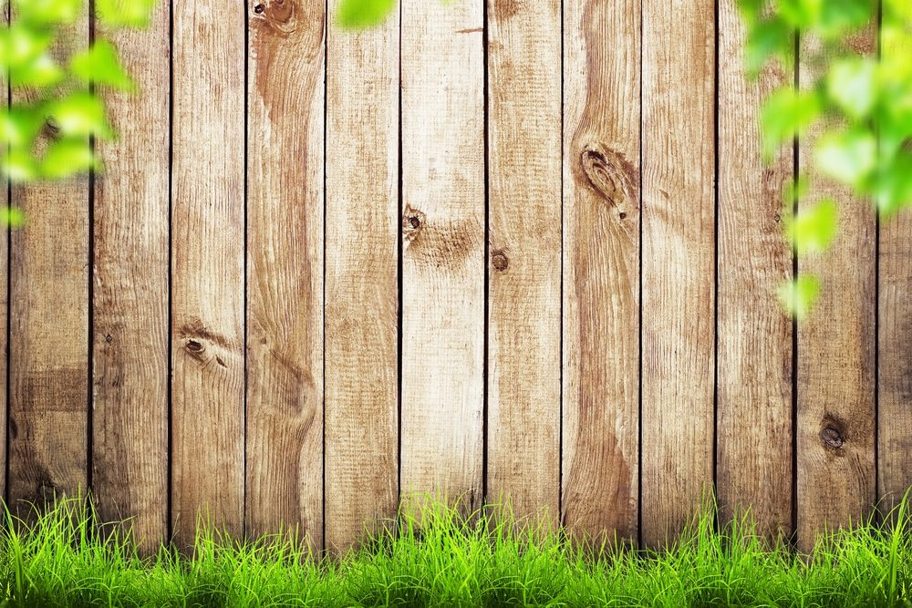

In This Guide
- A vertical fence usually costs a little less, because horizontal boards need higher-grade lumber and more careful support to avoid sagging.
- Horizontal fences read as modern and sleek, while vertical fences look traditional and work with more materials.
- Privacy and security depend on how tightly the boards are set and whether they give climbers a foothold, so the design details matter.
- In humid Louisiana weather, sealing, drainage, and solid posts matter more than the orientation you choose.
The board direction on a fence looks like a style choice, and it is one. It also changes what the fence costs, how it holds up, and how it feels in your yard. Horizontal and vertical boards can use the same wood and the same posts, yet they behave differently once the fence is built.
This guide from Big Easy Fence compares the two on cost, looks, structure, privacy, and upkeep, so you can pick the layout that makes sense for your wood fence or other new fence.
What Sets the Two Apart
On a vertical fence, the boards or pickets stand upright and attach to horizontal rails between the posts. On a horizontal fence, the boards run sideways and attach directly to the posts, or to a frame behind them. That single change shifts how weight is carried and how the fence looks from the street.
Wood is the material most often built either way. Vinyl and aluminum fences usually come in vertical patterns, with pickets, panels, or bars standing upright.
What Affects the Cost of Any Fence
Before comparing orientations, keep in mind that several other factors move the price more than board direction does.
Material
Wood, vinyl, aluminum, and chain link cost different amounts, and each has its own upkeep and lifespan. Weigh durability and maintenance along with the price.
Length and Height
A longer fence needs more materials and more labor. A taller one uses more material per foot and takes more effort to install, though it also gives more privacy and security.
Style and Detail
A solid panel fence costs more than a chain link fence, and ornate designs cost more than plain ones. Extras like caps, trim, and gates add to the total.
Horizontal vs Vertical, Factor by Factor
| Factor | Horizontal | Vertical |
|---|---|---|
| Look | Modern and sleek | Traditional and familiar |
| Typical Cost | Usually a bit higher | Usually a bit lower |
| Sagging Risk | Higher, needs strong support | Lower |
| Foothold for Climbers | Boards can act as steps | Harder to climb |
| Common Materials | Mostly wood | Wood, vinyl, aluminum |
Cost
Vertical fences tend to come in a little cheaper. A horizontal wood fence generally calls for a better grade of lumber, because long boards that span between posts tend to sag or bow over time. It may also need more posts or extra support to stay straight, which adds to the material and the labor. The gap between the two is usually modest, and it changes with the wood, the height, and the site, so ask for a quote on each layout.
Look
Horizontal boards have a clean, modern feel, and the long lines can make a yard seem wider. Vertical boards look classic and suit traditional homes and neighborhoods with a lot of older architecture. Pick the one that complements the style of your house and landscaping.
Structure and Sagging
Gravity works on a horizontal board along its full length, so it needs firm support at the posts. Spans that are too long or lumber that is too thin will bow. Vertical boards are short pieces fastened to rails, so sagging is less of a worry.
Privacy and Security
Either layout gives privacy when the boards are set tightly, and gaps decide how much you see through. Vertical boards can be harder to climb, since a horizontal board can work like a ladder rung. If security is the main goal, the details of the design count more than the direction.
Upkeep in Humid Weather
Wood in any direction needs sealer or stain in this climate. Horizontal boards have long top edges that can hold water, so keep the finish fresh and make sure water drains away from the bottom board and the posts. Vertical boards shed rain more easily. Vinyl and aluminum verticals need only occasional washing, and you can see more of those options on our metal fence page.
When Each Layout Makes Sense
Choose Horizontal If
- You want a modern look. The clean lines suit contemporary homes and landscaped yards.
- You will pay for better lumber. Good boards and solid support keep the fence straight.
- You like the styling. Boards can be spaced or stained to create a pattern.

Choose Vertical If
- You want to keep costs down. Vertical builds are typically a little less expensive.
- Security matters. Upright boards are harder to climb than horizontal ones.
- You prefer low upkeep. Vertical vinyl and aluminum are easy to maintain and resist insects, weather, and rot.
- You want a traditional look. Vertical is the familiar style for most neighborhoods.
Making the Decision
Neither layout wins across the board. Vertical is usually cheaper and more forgiving, and horizontal offers a modern look for a small premium. The right answer depends on the material, the height, the length, and the style of your home.
To compare the two for your own property, our residential fencing team can price both layouts and give you a free estimate. You can also browse the fence types we build.
Not Sure Which Layout Suits Your Yard?
Tell us about your property and we will help you compare both layouts with real numbers.